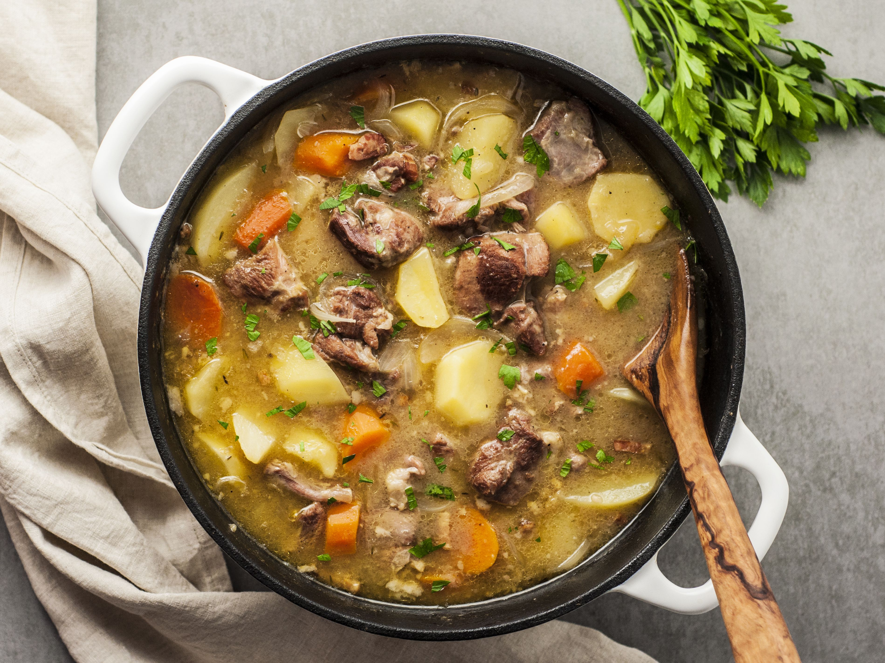

Instant Pot Irish Stew

Yummy delicious. Yummy yummy stewy goodness yeah.
Ingredients
- 1 tbsp butter
- 1 tbsp olive oil
- 1 1/4 lbs lamb shoulder, cubed
- 1 onion, diced
- 2 shallots, diced
- 2 cloves garlic, minced
- 1/2 tsp white cooking wine
- 2 carrots, or more to taste, sliced into rounds
- 3/4 lb small red potatoes, halved
- 1/2 tsp dried rosemary
- 1/2 tsp dried thyme
- 1 1/2 cups beef broth
- 2 tbsp cold water
- 1 tbsp potato starch
- salt and ground black pepper to taste
Steps
- Warm butter and oil in a multi-functional
pressure cooker (such as Instant Pot) set
to Saute function. Add lamb and cook until browned
on all sides, about 5 minutes. Transfer to a plate.
Add onion and shallots to the pot; cook and stir
until translucent, 4 to 5 minutes. Add garlic and
cook for 1 minute longer.
- Pour wine into the pot and scrape up any browned
bits off the bottom of the pot. Cook until wine is reduced
by half, 3 to 5 minutes. Place carrots and potatoes on
top of onions. Season with rosemary and thyme; stir to combine
well. Arrange lamb over vegetables; pour beef broth on top.
- Close and lock the lid. Open vent for steaming. Select
Meat/Stew function; set timer for 20 minutes. Allow 10 to 15 minutes
for pressure to build.
- Release pressure using the natural-release method according
to manufacturer's instructions, about 10 minutes. Meanwhile,
mix water and potato starch until creamy.
- Unlock and remove lid. Switch to Saute function. Stir potato
starch mixture into the stew; cook until thickened, 2 to 3 minutes.
Season with salt and pepper.